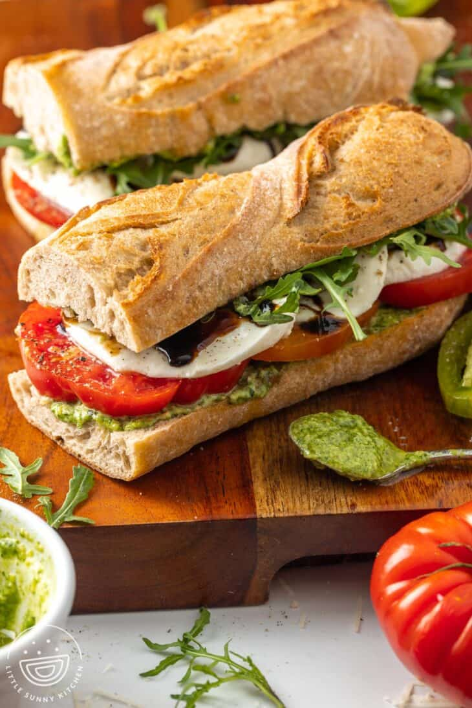

Caprese Sandwich With Pesto Aioli

This isn’t exactly a caprese salad, but it IS an easy recipe for a caprese sandwich! I’m adding bread to an otherwise carb-free meal to make it extra satisfying and easy to eat with your hands!
This sandwich would make the perfect picnic meal! The recipe makes enough for two large sandwiches or four smaller ones, so you can share it with your favorite people.
Ingredients
- Pesto Aioli:
- ▢ 1 cup fresh basil leaves no stems
- ▢ 2 tablespoons pine nuts
- ▢ 1 small clove garlic
- ▢ ¼ cup (21 g) grated parmesan cheese
- ▢ ⅛ teaspoon ground black pepper
- ▢ ¼ teaspoon salt
- ▢ ¼ cup (60 ml) extra-virgin olive oil
- ▢ ½ cup (125 g) mayonnaise
- Sandwiches:
- ▢ 1 12-ounce (340 g) French baguette
- ▢ 2 medium ripe tomatoes sliced
- ▢ 8 ounces (225 g) fresh mozzarella cheese sliced
- ▢ 2 tablespoons (30 ml) balsamic glaze
- ▢ salt and ground black pepper to taste
- ▢ 1 cup arugula packed
Preparation Steps
- Preheat the oven to 350°F (180°C), or 160°C for a fan oven. Slice the bread in half lengthwise, and place on a baking sheet cut side up and bake for 6 minutes or until lightly toasted.
- In a food processor, blend basil, pine nuts, garlic, Parmesan, black pepper, and salt until smooth scraping down the sides as needed.
- Gradually add olive oil until incorporated, then stir in mayonnaise to complete the pesto aioli.
- Spread the pesto aioli on both cut sides of the toasted baguette.
- Season the tomato slices with salt and pepper.
- Arrange seasoned tomato slices on the bottom halves, top with mozzarella, drizzle with balsamic glaze, and add arugula. Cover with the top halves of the baguette and serve.
Home